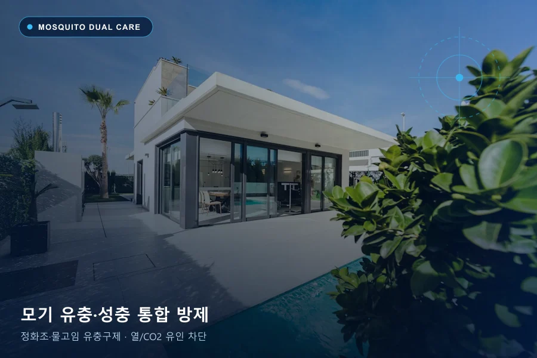

모기 방제는 사람의 열·이산화탄소(CO2)·냄새를 따라 실내로 들어오는 성충의 유입 경로를 막고, 정화조·집수정·고인 물에서 자라는 유충(장구벌레)을 동시에 관리하는 작업입니다. 에코플랜은 건물 지하 수역과 외곽 휴식 장소를 3W로 조사해 계절·시설 조건에 맞는 유충·성충 통합 방제를 계획합니다.
모기 3W 발생 원인 및 서식 단계 기준
눈에 보이는 개체 수만으로 번식 규모를 단정하기보다 왜 유인되는지(Why), 어디로 들어와 숨는지(Where), 언제 활동하는지(When)와 관찰 빈도를 함께 대조해야 정확한 방제 범위를 정할 수 있습니다.
| 3W 분석 항목 | 모기 현장 확인 내용 |
|---|---|
| Why · 유인·발생 요인 | 성충은 사람의 체열(열) → 호흡 이산화탄소(CO2) → 체취(냄새) 순서로 실내로 유인되며, 건물 내외부의 고인 물이 유충(장구벌레)의 번식원이 됩니다. |
| Where · 침입·서식 지점 | 지하 정화조·집수정·배수 펌프실(겨울철 포함 연중 서식), 화장실 환풍구·배관 관통부, 창문 방충망 물구멍, 화분 받침·옥상·외곽 물고임 구역. |
| When · 주요 활동 시점 | 야간 및 새벽 시간대에 흡혈 활동이 집중되며, 가을·겨울철에도 실내에서 모기가 보인다면 건물 지하 정화조·집수정 내부 번식 신호입니다. |
모기 관찰 마릿수·징후에 따른 1~3단계 서식 판별 기준
| 서식 단계 | 관찰 빈도 및 징후 | 현장 상태 해석 |
|---|---|---|
| 1단계 · 외부 침입 단계 | 실내에서 간헐적으로 1~3마리 내외 목격 | 출입문 개폐 시나 창문 방충망 물구멍·틀 틈새를 통해 외부 성충이 유입된 단계입니다. |
| 2단계 · 주변 서식·유입 단계 | 화장실·복도·계단실 벽면에 5마리 내외 붙어 있음 | 건물 주변 물고임 장소나 지하 배수 설비에서 발생한 모기가 공용부와 배관을 통해 유입되는 단계입니다. |
| 3단계 · 건물 내부 대량 번식 단계 | 매일 목격되거나 겨울철에도 10마리 내외 지속 출현 | 건물 지하 정화조·집수정 등 내부 수역에서 유충(장구벌레)이 대량 번식해 배관·환풍구를 타고 실내로 올라오는 단계입니다. |
모기 생활사(유충 · 성충) 단계별 에코플랜 방제 구분
| 관리 대상 | 주요 서식 및 점검 지점 | 핵심 방제 및 차단 방법 |
|---|---|---|
| 유충 (장구벌레) 원천 관리 | 지하 정화조, 집수정, 오수·배수 펌프실, 건물 외곽 고인 물·우수관 | 수역 내 유충 밀도 확인 후 환경부 허가 유충구제제 투여 및 정화조 환기구 방충망 점검 (1마리 유충 구제로 수백 마리 성충 발생 예방) |
| 성충 유입 차단 · 휴식처 관리 | 출입구, 창틀 물구멍, 화장실 환풍구, 지하실·복도·외벽 그늘진 벽면 | 성충이 머무는 벽면·천장 잔류 분무(성충구제제·CS제제), 침입 틈새 보수 제안 및 실내외 유인 포충기 운영 |
아파트·빌딩 지하 정화조 모기 계절별 유충·성충 방제 기술
도심 아파트와 오피스 빌딩의 실내 모기는 외부 화단뿐 아니라 지하 정화조·집수정·배수펌프실에서 연중 번식합니다. 성충 1마리가 수백 개의 알을 산란하므로 계절별 수온과 이동 경로에 맞춘 유충(장구벌레) 선제 구제가 핵심입니다.
| 계절 구분 | 정화조·건물 내 모기 생태 특성 | 에코플랜 중점 방제 기술 |
|---|---|---|
| 봄철 (3~5월 · 해빙기) | 지하 정화조·집수정에서 월동한 유충이 성충으로 우화해 배관·환풍구로 첫 유입 시작 | 정화조·집수정 유충 밀도 사전 조사 및 환경부 허가 유충구제제(IGR 등) 1차 집중 투여, 환기구 방충망 보수 |
| 여름철 (6~8월 · 장마·고온기) | 외부 고인 물·우수관 번식과 지하 수역 번식이 동시에 급증하며 출입문을 통한 유입 극대화 | 실내외 유충구제 주기 단축 + 지하실·복도 벽면 서방형 CS(캡슐) 성충구제제 잔류 처리 + 유인 포충기 가동 |
| 가을철 (9~11월 · 실내 유입기) | 외부 기온 하강으로 모기가 따뜻한 실내·로비·승강기 홀·지하 주차장으로 대거 이동 | 출입구·창틀 물구멍·환풍구 댐퍼 침입 차단 점검 및 공용부 휴식 벽면 집중 관리 |
| 겨울철 (12~2월 · 지하 월동기) | 난방·오수열로 15~20℃가 유지되는 지하 정화조 내부에서 빨간집모기 유충이 사계절 번식 지속 | 동절기 지하 정화조·오수관 심부 유충 원천 구제로 봄철 대발생 사전 차단 (밀폐공간 안전장비 기준 준수) |
모기 발생 의심 신호와 서식 흔적
- 창문과 방충망을 닫아두어도 침실·매장 실내에서 모기가 반복적으로 나타납니다.
- 기온이 낮은 늦가을이나 겨울철에도 화장실, 엘리베이터 홀, 지하층 주변에서 모기가 보입니다.
- 건물 지하 정화조·집수정 주변이나 외곽 화단·배수로에 물이 상시 고여 있습니다.
모기 방제를 위한 현장 핵심 점검 지점
- 지하 정화조·집수정·배수 펌프실의 유충 서식 여부와 환기통 방충망 파손 상태
- 창문 방충망 하단 물구멍, 샷시 겹침 틈새, 화장실 환풍구 댐퍼 및 배수구
- 화분 받침대, 옥상 배수로, 외부 폐타이어·빈 용기 등 생활 주변 고인 물
모기 상담 전 직접 할 수 있는 환경 관리 및 주의사항
- 화분 받침대와 건물 주변 용기에 고인 물을 비우고 창틀 하단 물구멍 스티커·방충망 틈새를 점검합니다.
- 화장실 환풍구와 바닥 배수구를 통한 유입이 의심되면 역류 방지 트랩·망 설치를 검토합니다.
- 정화조나 지하 집수정 같은 밀폐 공간은 질식·안전사고 위험이 있으므로 직접 열거나 들어가지 말고 관리주체 및 방제 전문기업에 점검을 요청하세요.
에코플랜의 모기 맞춤 방제 공법과 사후 관리
모기가 실내로 끌려오는 유인 요인(열→CO2→냄새)과 건물 내 수역 조건을 3W로 진단합니다. 정화조·집수정 등 발생원에는 유충구제제를 적용하고, 성충이 휴식하는 지하·복도·외곽 벽면에는 성충구제제 및 서방형 CS(캡슐)제제를 적용하며 필요시 야외·실내 포충기를 연계합니다.
방문 횟수와 주기는 현장 조사와 모니터링 결과를 바탕으로 협의합니다. 공간 면적, 시설 구조, 발생 단계(1~3단계), 작업 범위에 따라 견적이 달라지며 한 번의 작업만으로 모든 재유입이 영구 차단되는 것은 아니므로 환경개선과 사후 점검을 함께 안내합니다.
모기 방제 자주 묻는 질문
겨울이나 추운 계절에도 실내에서 모기가 나오는 이유는 무엇인가요?
도심 빌딩, 아파트, 상가 건물의 지하 정화조와 집수정은 겨울철에도 따뜻한 수온이 유지되어 빨간집모기(지하모기) 유충이 사계절 내내 번식할 수 있습니다. 성충으로 우화한 모기가 배관 통로나 환풍구, 계단실을 타고 실내로 올라오므로 지하 발생원 유충구제가 필요합니다.
모기 방제는 한 번만 해도 되나요, 주기는 어떻게 정하나요?
모기는 알에서 성충이 되기까지 생활사 주기가 짧고 계절·강수량·정화조 수위 변화의 영향을 받습니다. 모든 공간에 획일적인 주기를 적용하기보다 유충 서식 수역의 유무, 계절별 발생량, 포충기 포획 추이에 따라 점검·투여 주기를 협의합니다.
• 작성·검토 주체: 주식회사 한국에코플랜 기술연구소 · 위해생물방제사 기술지원팀 (대표 김영태 · 고객센터 1688-4587)
• 최초 구성일: | 최종 개정·검수일:
• 참고 법령 및 1차 공공 기준: 환경부 초록누리(살생물제 승인기준) ↗ · 질병관리청 감염병 매개체 종합방제(IPM) 지침 ↗ · 한국식품안전관리인증원(HACCP 방충·방서 기준) ↗ · 감염병예방법 소독기준 ↗
• 공식 채널 확인: 에코플랜 공식 도메인(ecoplan.co.kr) ↗ · 스마트캐치 공식 네이버 스마트스토어 ↗ · 현장 맞춤 상담 신청